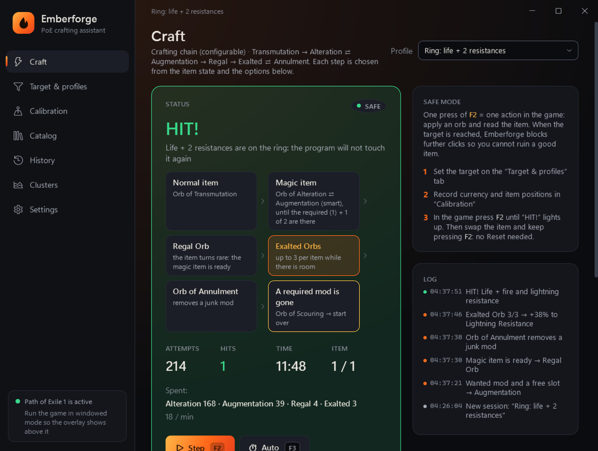

Emberforge
EmberforgeFree automated crafting tool and PoE autocraft for Path of Exile 1 and 2
Set the mods you want: Emberforge picks the next orb and stops on a hit. Free, in English and Russian.
Download for freeWindows 10/11 · updates itself · or a single file, no installation

Features
Crafting chains
Transmutation → Alteration ⇄ Augmentation → Regal → Exalted ⇄ Annulment, with junk-mod reactions and per-orb limits.
Cluster jewels
Official trade prices of every notable combo of a cluster jewel, and one profile for every profitable combo.
T17 map rolling
Item quantity, more currency, pack size and forbidden mods, for maps and Waystones, in batches.
6 sockets and 6-link
Jeweller's Orbs up to the sockets you need, then Orbs of Fusing up to 6 links. Sockets only or links only too.
PoE 2
Sinistral and Dextral Omen hints, Essences instead of Regal, the PoE 2 mod database.
Safe mode
One key press from you is one action in the game, as GGG requires. No memory reading, no injection.
FAQ
Is Emberforge free?
Yes. Download and use it for free, no sign-up and no subscription.
Is it a bot? Can I get banned for autocrafting?
In safe mode (the default) the program never presses anything by itself: one key press from you is one action in the game. Auto mode breaks the game rules and can get you banned, so it is off and can only be enabled after explicitly accepting the risk.
Does it support Path of Exile 2?
Yes: Waystones, crafting chains, Essences and Omen hints.